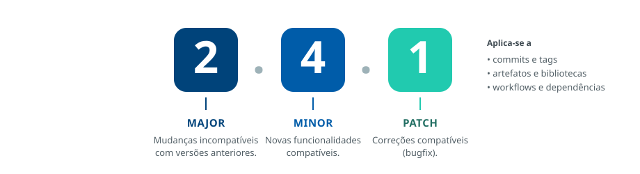

9
Diretriz
O versionamento semântico deve ser adotado para todos os elementos que compõem a versão
Regra
Commits, artefatos, bibliotecas, execuções de workflows e demais componentes devem adotar o padrão SemVer, garantindo clareza na evolução das versões e eliminando ambiguidades na identificação de cada entrega.
A estrutura do SemVer
FiguraMAJOR . MINOR . PATCH

Por que adotar
- Assegura previsibilidade e facilita a automação dos pipelines.
- Permite que sistemas interpretem corretamente o impacto das mudanças.
- Reforça a rastreabilidade: cada versão é associada de forma inequívoca aos seus componentes (tags, artefatos, dependências).
- Consolida a interoperabilidade entre equipes e ferramentas.
Referências metodológicas
As referências metodológicas sobre este assunto devem ser incluídas aqui.